Credentials - rozwiązania problemów i dodatkowe poradniki¶
Credentials Gmail / Google Drive / Google Sheets - nie wiem jak dodać Client Id i Client Secret¶
- Zaloguj się do google cloud platform link.
- Następnie podążaj za instrukcją z tego wideo
Credentials Google - nie mogę pobrać Client Secret z Google Cloud Platform¶
Kiedy otwieram credentials w Google Cloud Platform to nie mogę skopiować Client Secret ponieważ jest zaszyfrowany ( oznaczony gwiazdkami )
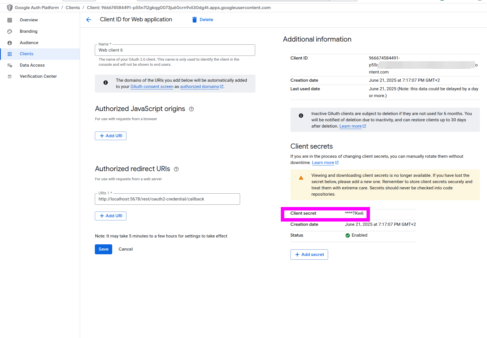
Dlaczego tak się dzieje?
Google Cloud Platform zmieniło politykę przechowywania danych i teraz użytkownik jest odpowiedzialny za bezpieczne przechowywanie swojego sekretu ( Client Secret ). Przez tę zmianę Google pozwala pobrać Client Secret jedynie w momencie tworzenia credentials.
Co należy zrobić?
-
Otwórz nowe credentials w Google Cloud Platform. Wybieramy
Create credentials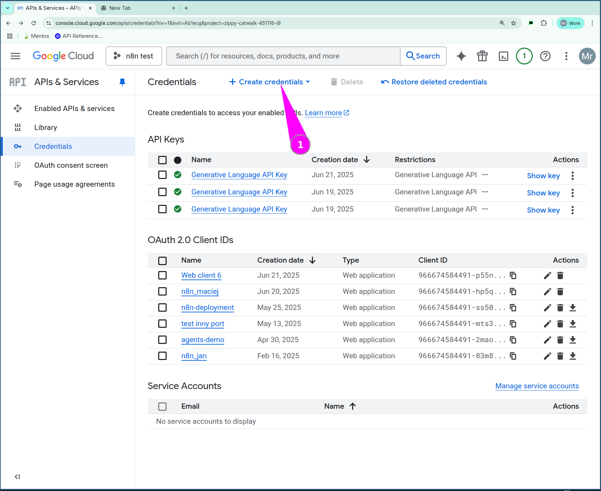 A następnie z listy wybieramyOAuth client ID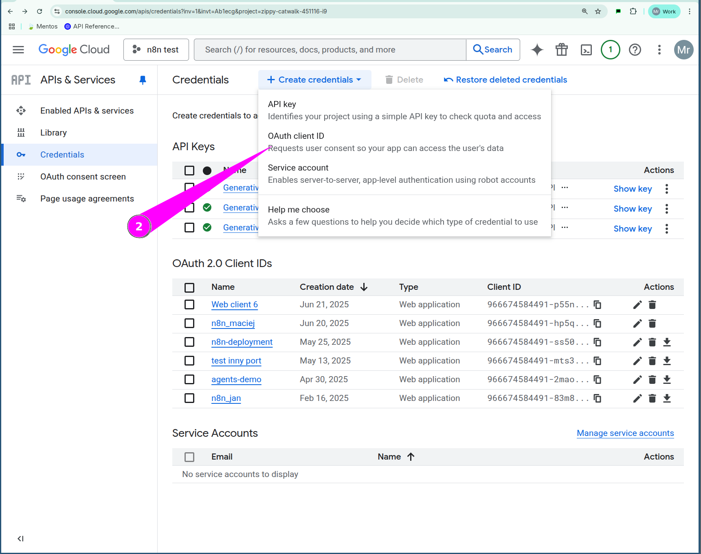 -
W kolejnym kroku wybieramy
Web application, ustalamy nazwę naszych Credentials, ustawiamyAuthorized redirect URIsnahttp://localhost:5678/rest/oauth2-credential/callback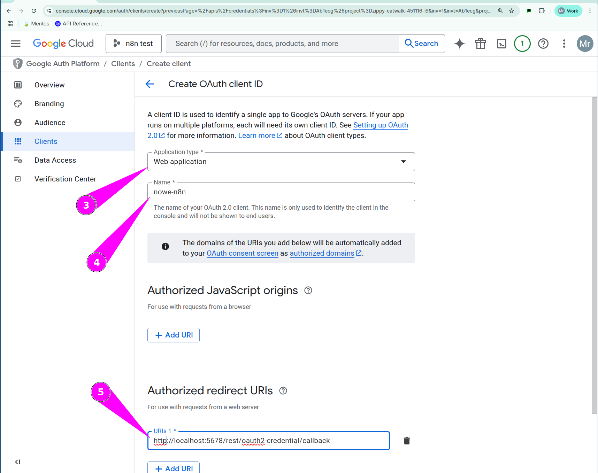 -
A następnie klikamy na
Create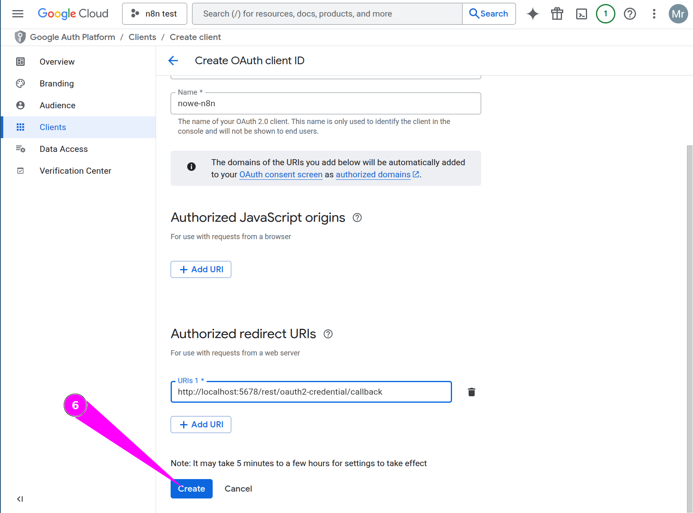 -
W kolejnym kroku pojawią się nasze dane dostępowe ( czyli
Client IDiClient Secret). Należy je skopiować i zapisać w bezpiecznym miejscu. Można również je pobrać jako plik klikając naDownload JSON. WartościClient IDiClient Secretwarto wpisać od razu do credentials w n8n. 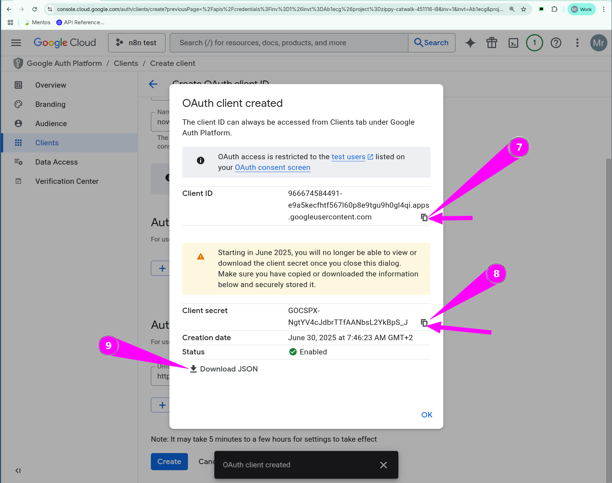 Proces ustawiania credentials w n8n został opisany w tym samouczku Kliknij, żeby przejść do instrukcji
Credentials Gmail - Node Gmail nie działa i zwraca błąd przy wywołaniu workflow¶
-
Jeśli widzisz taki błąd 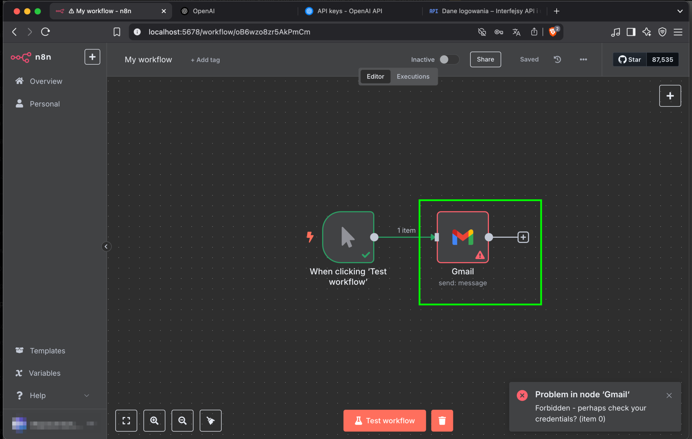 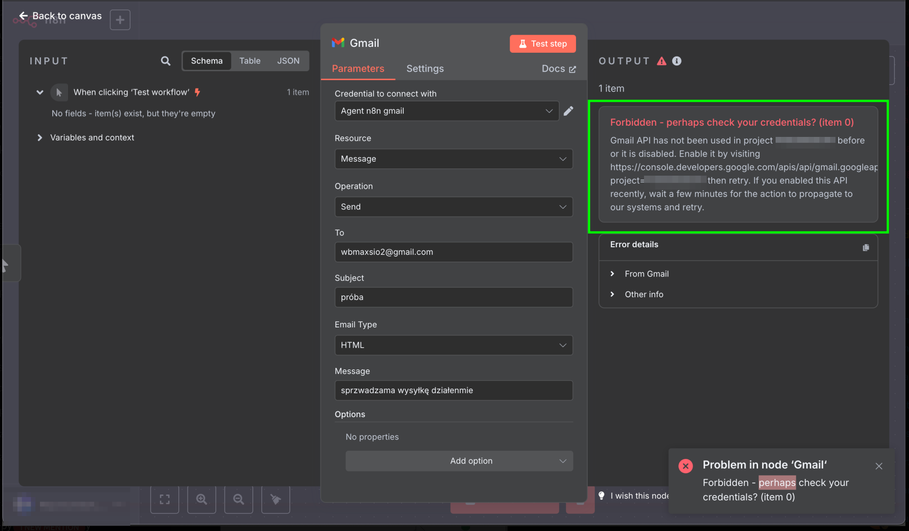
-
Zaloguj się do google cloud platform link.
- Następnie podążaj za instrukcją z tego wideo
Node Google Sheet nie widzi listy dokumentów¶
- Jeśli rozwijasz w polu Document listę From List i widzisz taki błąd
 Oznacza to, że należy włączyć serwis Google Drive API
Oznacza to, że należy włączyć serwis Google Drive API - Zaloguj się do google cloud platform link.
- Następnie podążaj za instrukcją z tego wideo
Credentials Google Sheet / Gmail/ Google Drive nie działają po ustawieniu WEBHOOK_URL i uruchomieniu ngrok¶
-
Otwórz któryś z istniejących Credentials jakiegokolwiek serwisu Google ( np, Gmail ) i skopiuj zawartość pola
OAuth Redirect URL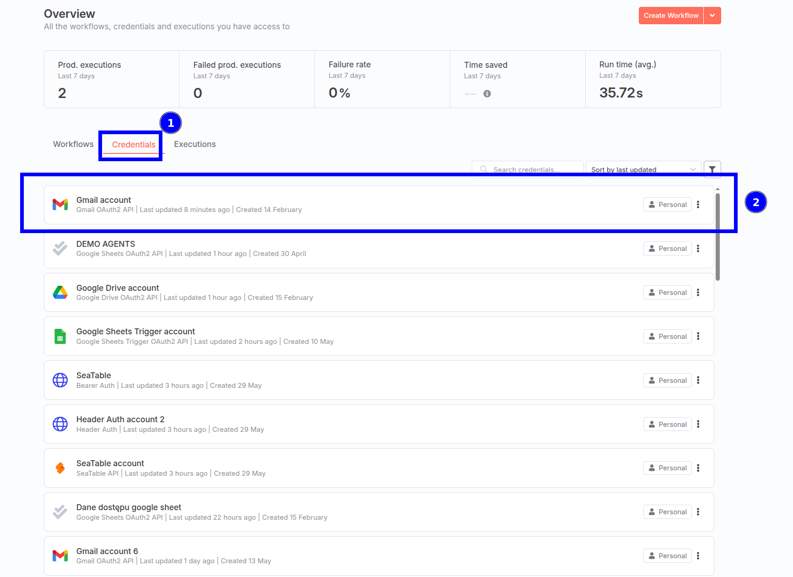 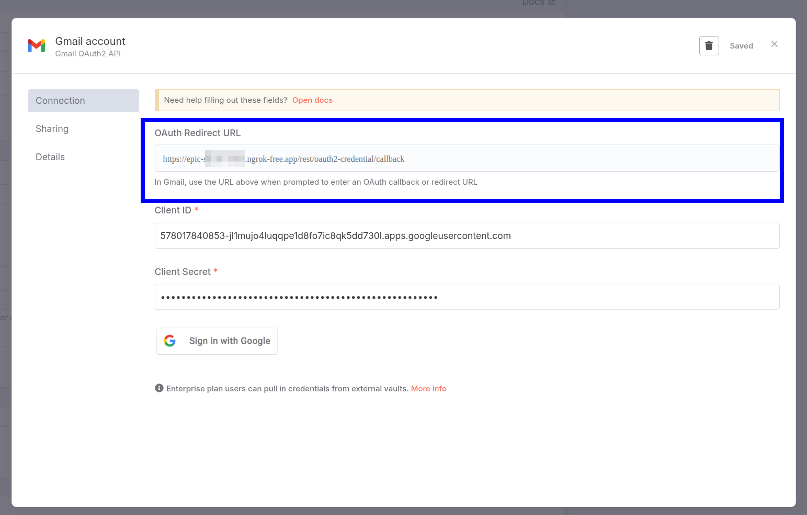 -
Otwórz swój projekt w Google Cloud Platform
-
Dodaj adres skopiowany z
OAuth Redirect URLdoAuthorized Redirect URIsw Google Cloud 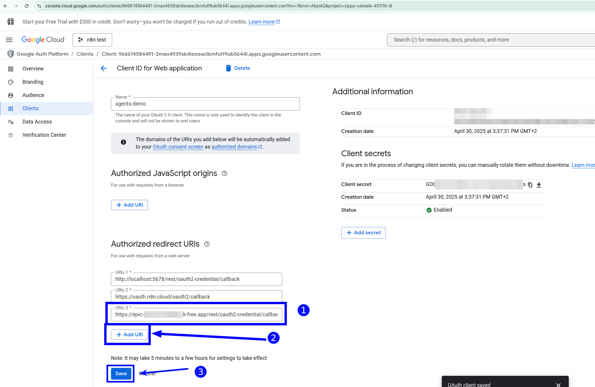
Jeśli potrzebujesz przypomnienia jak się poruszać po Google Cloud zerknij na tę instrukcję
Błąd: "OAuth callback failed because of insufficient permissions" — różne porty 5678/5679¶
Jeśli przy łączeniu credentials Google widzisz komunikat o błędzie w oknie callbacku i Twoje n8n działa pod http://localhost:5679, a w Google Cloud w Authorized redirect URIs masz http://localhost:5678/rest/oauth2-credential/callback, to problemem jest niedopasowanie portów. Port w Google Cloud musi być taki sam jak port, na którym działa n8n.

Rozwiązanie - uruchom n8n na standardowym porcie 5678
-
Zatrzymaj i usuń kontener n8n działający na porcie 5679 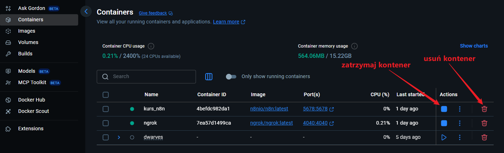
-
Przejdź do sekcji
Imagesi wybierz obrazn8nio/n8n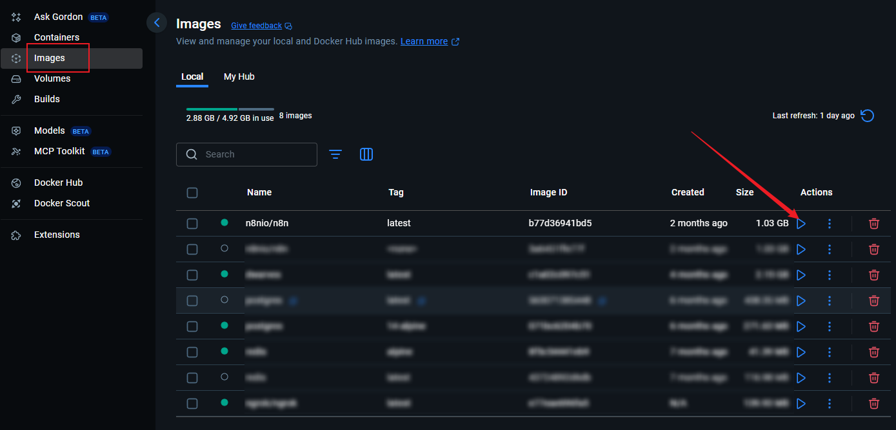 -
Uruchom ponownie kontener n8n mapując port
5678:5678(tak aby aplikacja była dostępna podhttp://localhost:5678).
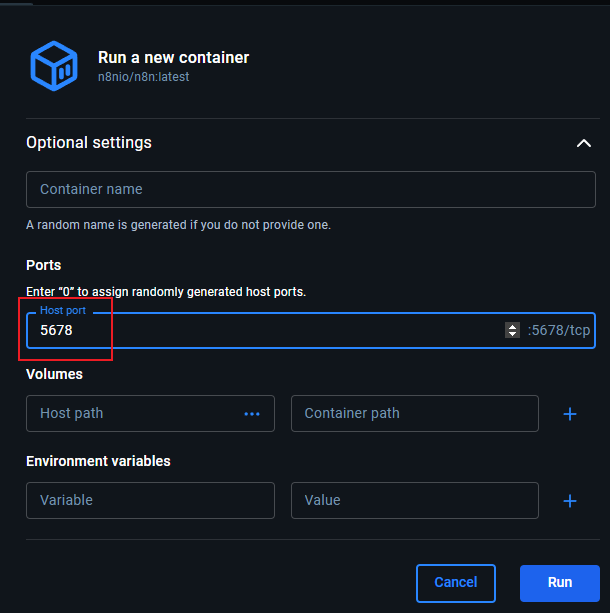Uwaga
Nie zapomnij wypełnić reszty pól! W przeciwnym razie n8n nie będzie działał.
-
Upewnij się, że w Google Cloud
Authorized redirect URIszawierahttp://localhost:5678/rest/oauth2-credential/callback. 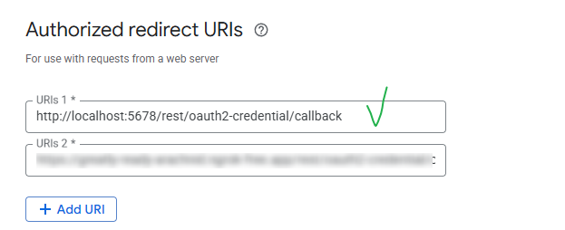 -
Wróć do n8n i ponów
Sign in with Google.
Usuwanie niepotrzebnych/niedziałających credentials z node'a w n8n¶
Jeśli masz niepotrzebne lub niedziałające credentials skonfigurowane w swoim node'ie w n8n, możesz je łatwo usunąć wykonując poniższe kroki:
Uwaga
Usunięcie credentials może spowodować, że inne workflow wykorzystujące te same credentials przestaną działać. Upewnij się, że nie są używane w innych miejscach przed ich usunięciem.
-
Otwórz ustawienia node'a z credentials - kliknij na ikonę edycji (ołówek) w prawym górnym rogu node'a, dla którego chcesz usunąć credentials. 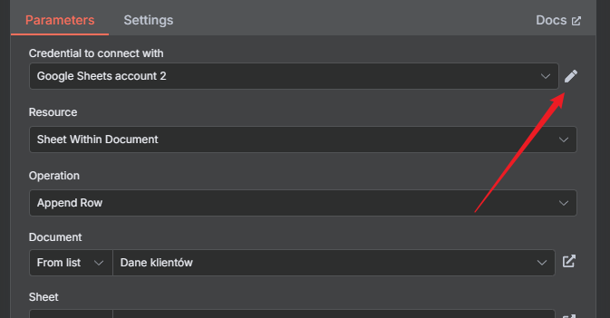
-
Przejdź do ustawień credentials - w oknie ustawień node'a przejdź do sekcji credentials i kliknij na ikonę kosza (usuwania) w prawym górnym rogu okna credentials. 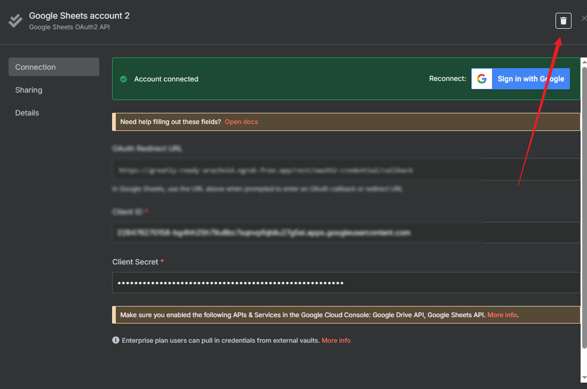
-
Potwierdź usunięcie - pojawi się okno dialogowe z pytaniem czy na pewno chcesz usunąć credentials. Kliknij przycisk "Yes, delete" aby potwierdzić usunięcie. 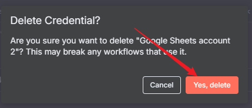
Błąd autoryzacji OAuth: "Dostęp zablokowany" / "The OAuth client was not found"¶
Jeśli podczas próby autoryzacji z Google (Gmail, Google Drive, Google Sheets) widzisz komunikat o błędzie autoryzacji podobny do poniższego:
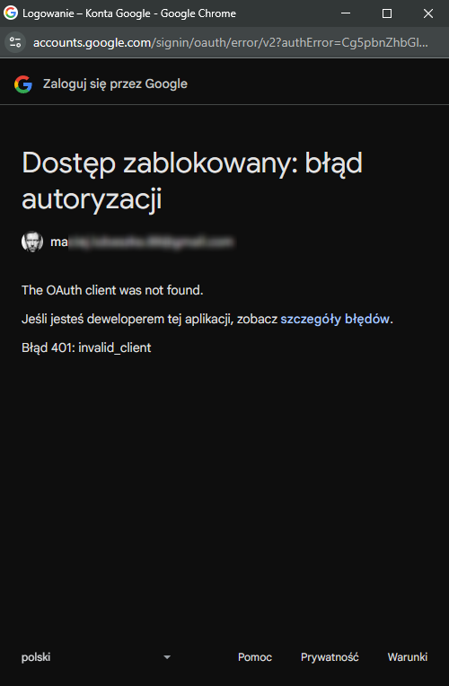
Przyczyna problemu:¶
Problem najczęściej występuje gdy przeglądarka automatycznie loguje się na inne konto Google niż to, dla którego zostały skonfigurowane credentials w Google Cloud Platform. Może to się zdarzyć, gdy:
- Masz zalogowanych wiele kont Google w tej samej przeglądarce
- Przeglądarka automatycznie wybiera konto, które nie ma dostępu do skonfigurowanej aplikacji OAuth
- Credentials zostały utworzone dla jednego konta, a próbujesz autoryzować się z poziomu innego
Rozwiązanie:¶
Użyj trybu incognito (prywatnego) w przeglądarce:
-
Skopiuj adres URL workflow - skopiuj pełny adres workflow z paska adresu przeglądarki (np.
localhost:5678/workflow/C8y5bItiJVEBsXTABpH55433/48dc12) 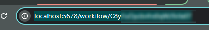 -
Otwórz okno incognito - otwórz nowe okno przeglądarki w trybie incognito/prywatnym:
- Chrome: Ctrl+Shift+N (Windows) lub Cmd+Shift+N (Mac) 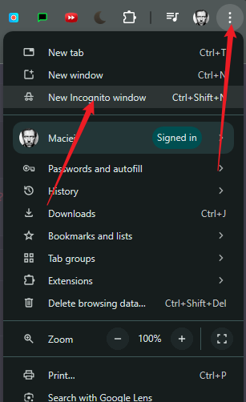
- Firefox: Ctrl+Shift+P (Windows) lub Cmd+Shift+P (Mac)
- Edge: Ctrl+Shift+N (Windows)
-
Wklej adres workflow - wklej skopiowany adres URL do paska adresu w nowym oknie incognito
-
Ponów autoryzację - przejdź do swojego node'a (np. Gmail) i spróbuj ponownie wykonać autoryzację OAuth
Dlaczego to działa?¶
Tryb incognito zapewnia "czystą sesję" bez wcześniej zapamiętanych danych logowania, co pozwala:
- Ręcznie wybrać właściwe konto Google
- Uniknąć automatycznego logowania na nieprawidłowe konto
- Przeprowadzić autoryzację z poziomu konta, które ma dostęp do aplikacji OAuth
Wskazówka
Po pomyślnej autoryzacji w trybie incognito, możesz wrócić do zwykłego okna przeglądarki. Autoryzacja zostanie zapamiętana w n8n.
Błąd przy pobieraniu zdjęcia z Google Drive: "Forbidden - perhaps check your credentials?"¶
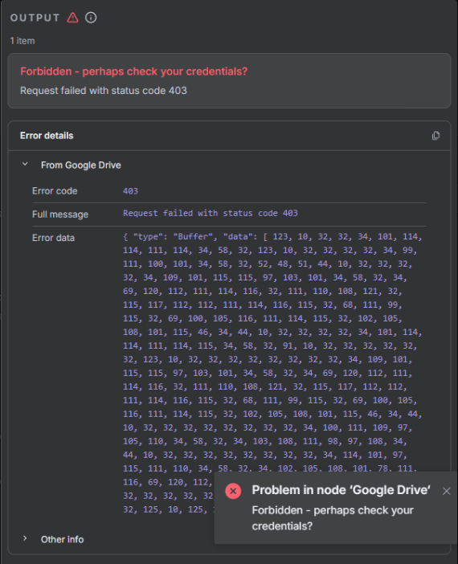
Przyczyna problemu:¶
Najczęstszą przyczyną tego błędu jest używanie ID folderu zamiast ID konkretnego pliku ze zdjęciem. Gdy kopiujesz link do zdjęcia bezpośrednio z Google Drive, często otrzymujesz link zawierający ID folderu, w którym znajduje się zdjęcie, a nie ID samego pliku.
Rozwiązanie:¶
Pobierz poprawne ID zdjęcia bezpośrednio z pliku:
-
Otwórz plik zdjęcia w Google Drive - znajdź swoje zdjęcie, a następnie:
- kliknij na trzy kropki
- wybierz opcję "Share"
- wybierz opcję "Copy link" (Kopiuj link) 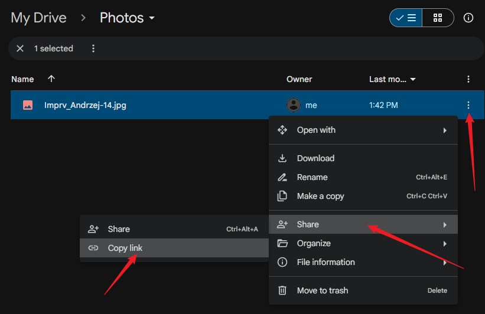
-
Wyciągnij ID pliku z linku - skopiowany link będzie miał format podobny do:
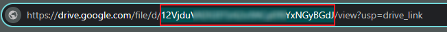https://drive.google.com/file/d/12Vidu___________YxNGvBGd/view?usp=drive_linkID pliku to część między
/d/a/view- w tym przypadku:12Vjdu___________YxNGyBGdJ -
Użyj poprawnego ID w n8n - wklej wyciągnięte ID do odpowiedniego pola w node'ie Google Drive
Dlaczego to działa?¶
Google Drive wyróżnia różne typy obiektów (foldery, pliki, dokumenty), każdy z unikalnym ID. Używając poprawnego ID pliku, Google Drive może prawidłowo zidentyfikować zasób i udostępnić go zgodnie z ustawionymi uprawnieniami.
Ważne
Upewnij się, że plik ma odpowiednie uprawnienia dostępu (jest publiczny lub udostępniony dla Twojego konta Google używanego w credentials).
Jak eksportować i importować credentials w n8n przy użyciu komendy n8n¶
Jak wyeksportować credentials w n8n do pliku i zaimportować je ponownie z pliku (np. w sytuacji kiedy chcemy przenieść credentiale na inny komputer)
Cały proces zawarty jest w tym wideo
Komendy użyte w poradniku
-
Eksportowanie do pliku
n8n export:credentials --all --output=/home/node/.n8n/credentials.json -
Importowanie z pliku
n8n import:credentials --input=/home/node/.n8n/credentials.json